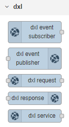

Prerequisites
To use the Node-RED OpenDXL contribution package, the following prerequisites must be satisfied:
Node-RED must be installed. For more information, see https://nodered.org/docs/getting-started/installation.
Note: In order to be able to import examples properly from the Node-RED UI, version 0.18.0 or newer of Node-RED should be installed.
OpenDXL JavaScript Client (Node.js) library installed
Note: When you follow either of the installation approaches in the next section, the OpenDXL JavaScript Client should be installed automatically. You do not need to explicitly install the OpenDXL JavaScript Client library before installing the Node-RED OpenDXL contribution package.
The OpenDXL JavaScript Client (Node.js) prerequisites must be satisfied
Installation
The Node-RED OpenDXL contribution package can be installed either through Node-RED itself or from the command line on the Node-RED server. For simplicity, you may choose the Node-RED based installation approach. See the following sections for information on both installation approaches.
Node-RED Based Installation
Browse to your Node-RED server.
In the upper-right corner, press the side menu button.
Choose the
Manage paletteoption in the menu drop-down list.From the
Paletteuser settings tab, click on theInstalltab.In the
search modulestext box, enterdxl.Next to the entry for
@opendxl/node-red-contrib-dxlin the search results, press theinstallbutton.On the
Installingconfirmation dialog, press theInstallbutton.A dialog containing text like the following should appear when the installation is complete:
Nodes added to palette: * dxl-clientClick on the
Closebutton to close theUser Settingstab.
Command Line Installation
Before installing the Node-RED OpenDXL contribution package, first navigate in a
command shell to the user directory which you have configured for Node-RED. The
.node-red directory under the user's HOME directory is the default user
directory for Node-RED.
For Mac and Linux-based operating systems, run the following command:
cd ~/.node-redFor Windows, run the following command:
cd %HOMEPATH%\.node-redTo install the library from a local tarball for a Mac or Linux-based operating system, run the following command:
npm install ./lib/opendxl-node-red-contrib-dxl-0.1.0.tgz --saveTo install the library from a local tarball for Windows, run:
npm install .\lib\opendxl-node-red-contrib-dxl-0.1.0.tgz --saveTo install the library via the npm package registry, run the following command:
npm install @opendxl/node-red-contrib-dxl --saveAfter the installation is complete, restart Node-RED and browse to your Node-RED server.
Confirming the Installation Result
After the installation is complete, you should see several "dxl" nodes in the left column:

For more information, see the Node-RED Configuration documentation.